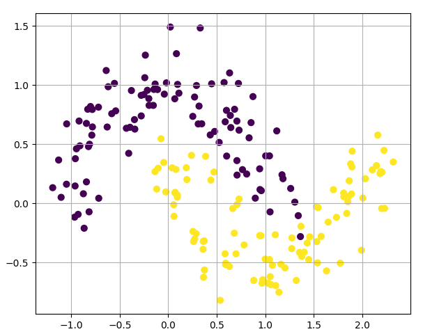
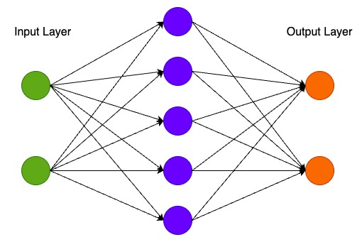

1.5 手写神经网络
手写神经网络
创建日期: 2025-04-02
在本节中我们将从头实现一个 3 层的神经网络。我们不会推导所有需要的数学知识，但我会尝试直观地解释我们正在做的事情。我还会指出一些资源，供阅读详细信息。
在这里，我假设您熟悉基本的微积分和机器学习概念，例如，您知道什么是分类和正则化。理想情况下，您还了解一些优化技术（如梯度下降）的工作原理。但即使您不熟悉上述任何内容，这篇文章仍然会很有趣！
1.5.1 生成数据集
让我们首先生成一个可以使用的数据集。幸运的是，scikit-learn 有一些有用的数据集生成器，所以我们不需要自己编写代码。我们将使用 make_moons 函数：
rng = numpy.random.default_rng(0)
x, y = sklearn.datasets.make_moons(200, noise=0.2)
pyplot.scatter(x[:, 0], x[:, 1], s=40, c=y)
我们生成的数据集有两个类别，分别绘制为红点和蓝点。你可以将蓝点视为男性患者，将红点视为女性患者，x 轴和 y 轴为医学测量值。
我们的目标是训练一个机器学习分类器，根据 x 和 y 坐标预测正确的类别（男性或女性）。请注意，数据不是线性可分的，我们无法画出一条直线来区分这两个类别。这意味着线性分类器（如逻辑回归）将无法拟合数据，除非您手动设计出适用于给定数据集的非线性特征（如多项式）。
事实上，这是神经网络的主要优势之一。你不需要担心特征工程。神经网络的隐藏层会帮你学习特征。
1.5.2 逻辑回归
为了演示这一点，我们训练一个 逻辑回归 (Logistic Regression) 分类器。它的输入是 x 和 y 值，输出是预测的类别 0 或者 1 ，为了方便起见，我们使用scikit-learn中的 Logistic 回归类：
该图显示了我们的 Logistic 回归分类器学习到的决策边界。它使用直线尽可能好地分离数据，但无法捕捉数据的“月亮形状”。
1.5.3 训练神经网络
现在让我们构建一个 3 层神经网络，其中包含一个输入层、一个隐藏层和一个输出层。输入层的节点数由数据的维数（2）决定。同样，输出层的节点数由类数（也是 2）决定。（因为我们只有 2 个类，所以我们实际上可以只用一个输出节点预测 0 或 1，但有 2 个输出节点可以让网络以后更容易扩展到更多类）。网络的输入将是 x 和 y 坐标，其输出将是两个概率，一个用于类 0（“女性”），一个用于类 1（“男性”）。它看起来像这样：

我们可以选择隐藏层的维数（节点数）。我们放入隐藏层的节点越多，我们能够拟合的函数就越复杂。但更高的维数是有代价的。首先，需要更多的计算来做出预测和学习网络参数。参数数量越多也意味着我们更容易过度拟合数据。
1.5.3.1 如何预测
我们的网络使用前向传播进行预测，这只是一堆矩阵乘法和我们上面定义的激活函数的应用。如果 \(x\) 是网络的二维输入，那么我们计算出来的预测 \(\hat{y}\) 也是二维的，如下所示：
\(z_1 = xW_1 + b_1\)
\(a_1 = tanh(z_1)\)
\(z_2 = a_1W_2 + b_2\)
\(a_2 = \hat{y} = softmax(z_2)\)
\(z_i\) 是第 \(i\) 层的输入，\(a_i\) 是经过激活函数后第 i 层的输出。\(W_1, b_1, W_2, b_2\) 是我们网络的参数，通过训练数据会进行学习。